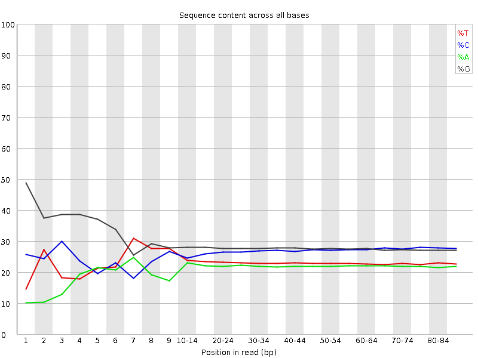
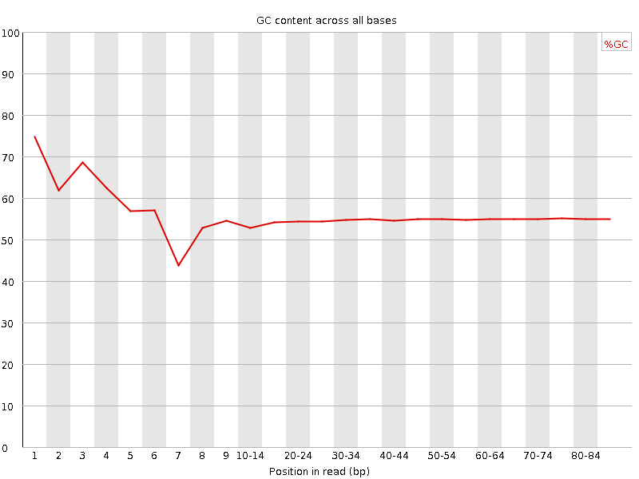
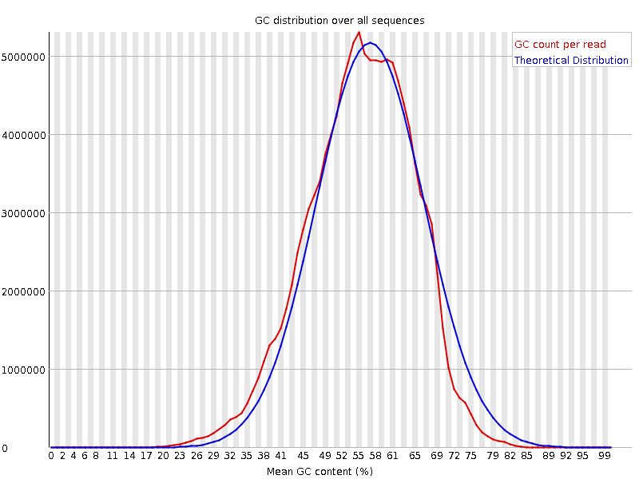
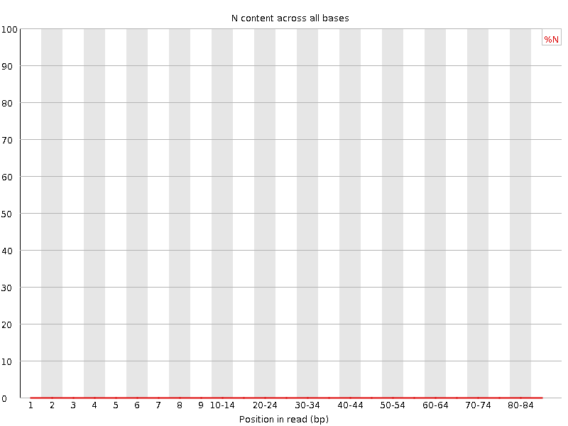
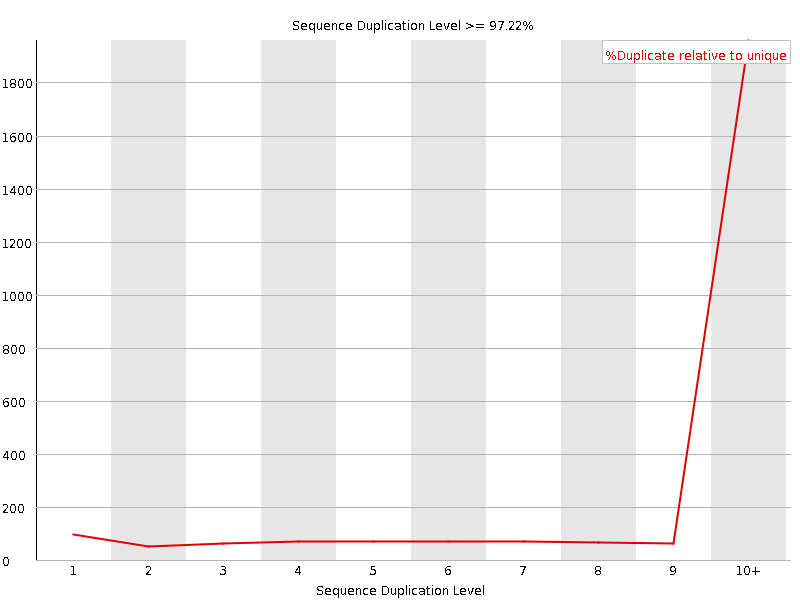

![[OK]](Icons/tick.png) Basic Statistics
Basic Statistics
| Measure | Value |
|---|---|
| Filename | SRR534291_pe_1.f.fastq |
| File type | Conventional base calls |
| Encoding | Illumina 1.5 |
| Total Sequences | 106005107 |
| Filtered Sequences | 0 |
| Sequence length | 85 |
| %GC | 55 |
Per base sequence quality

Per sequence quality scores

![[FAIL]](Icons/error.png) Per base sequence content
Per base sequence content

Per base GC content

Per sequence GC content

Per base N content

Sequence Length Distribution

Sequence Duplication Levels

![[WARN]](Icons/warning.png) Overrepresented sequences
Overrepresented sequences
| Sequence | Count | Percentage | Possible Source |
|---|---|---|---|
| GGGAACTTGAATTCGTATCCATCTGGCAGCTTGACGGTCAGGTTGGCCTG | 224192 | 0.21149169728209416 | No Hit |
| GTTCAGGGGGGCCTCGGTCAGCAGCACTGGGTGCTCCTCCGGGGCCACGC | 143966 | 0.13581043788767647 | No Hit |
Kmer Content

| Sequence | Count | Obs/Exp Overall | Obs/Exp Max | Max Obs/Exp Position |
|---|---|---|---|---|
| CAGCA | 33523335 | 4.0847836 | 6.0489817 | 9 |
| CCAGG | 41508260 | 3.837806 | 5.5189166 | 2 |
| CACCA | 26293680 | 3.414421 | 4.6742835 | 9 |
| TCCAG | 28966975 | 3.307541 | 4.580463 | 80-81 |
| ACCAG | 27020120 | 3.2923737 | 4.9538827 | 7 |
| CTTCT | 24003405 | 3.1718225 | 4.8386784 | 6 |
| TTCTT | 20561705 | 3.1485093 | 5.9943647 | 6 |
| CCAGC | 31651175 | 3.1187618 | 3.8890817 | 8 |
| CAGGG | 35921710 | 3.11646 | 5.229976 | 4 |
| CAGGA | 27153405 | 3.1045752 | 5.657333 | 3 |
| TCTTC | 22126785 | 2.923845 | 5.308878 | 7 |
| GCCAG | 29739780 | 2.7497058 | 5.5423956 | 1 |
| TTTTT | 14517015 | 2.575923 | 11.225639 | 1 |
| GCAGG | 29007950 | 2.516643 | 6.0346394 | 2 |
| GGCAG | 26615535 | 2.3090842 | 9.4146385 | 1 |
| CTGGG | 25582260 | 2.0798106 | 6.600558 | 1 |
| GGGCA | 21546970 | 1.8693504 | 5.2340164 | 3 |
| CTTGA | 13406045 | 1.7738321 | 5.4585724 | 6 |
| TGGGG | 23180205 | 1.7683098 | 6.876271 | 2 |
| GGGGG | 28376920 | 1.7528815 | 5.262788 | 3 |
| GGGAA | 14660035 | 1.5727838 | 6.811254 | 1 |
| GGGGA | 19190450 | 1.5622331 | 6.419277 | 1 |
| GGGAG | 18668385 | 1.5197334 | 5.4257336 | 1 |
| AACTT | 8473895 | 1.4776388 | 5.1192503 | 4 |
| GGGGT | 19142140 | 1.4602643 | 5.8929257 | 1 |
| TTGAA | 8464265 | 1.3849388 | 7.297107 | 7 |
| GTGGG | 17175210 | 1.3102167 | 7.3180466 | 1 |
| GTGGA | 11463420 | 1.1524673 | 5.2134914 | 1 |
| CGGGG | 15320360 | 1.0085564 | 5.513326 | 1 |
| GGGTT | 10215520 | 0.9623989 | 5.1304913 | 3 |
| TGAAT | 5871020 | 0.96062726 | 5.156423 | 8 |
| GCGGG | 10049865 | 0.66159385 | 5.620799 | 1 |